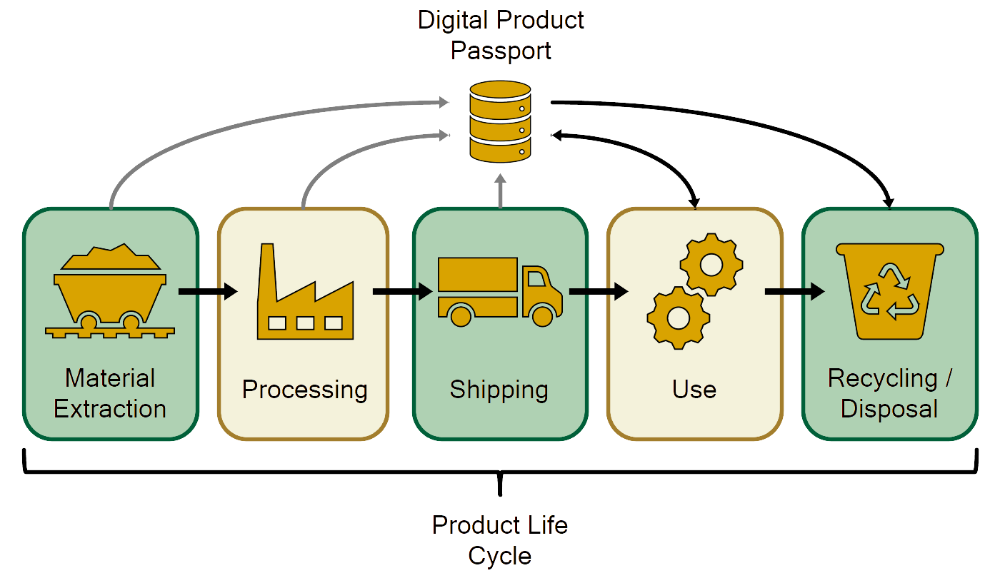

Major Individual Design Project: Digital Product Passports
Summary
This page includes and summarises the work completed as part of my final individual design project as part of my Integrated Design Engineering MEng degree at the University of Bath.
The project "Digital Product Passports" was put forward by a member of staff at the university Anna Chatzimichali, who was also my supervisor throughout the year supporting me all the way. In the first weeks of the project a brief was set to develop a novel method of communicating the data contained within a Digital Product Passport. It is likely worth explaining what a Digital Product Passport actually is. Basically, it is a database of information relating to a specific product including it's manufacturing/material data, usage data and recyclability data plus much more. Ideally this information would be kept up to date throughout the product's lifecycle allowing it to be more effectively reused or recycled at the end of it's life with the goal being in create a more circular product lifecycle. The diagram below may assist with understanding:
As part of the project there were multiple submissions throughout the two semesters which will be talked about now:
Exploratory Work
After deciding upon a rough brief for the project it was important to start exploratory work as soon as possible. The first piece of exploratory work that was completed was an investigation into how Digital Product Passports have already been incorporated for batteries and which technologies would be most suitable for communicating the typical information that would be contained in a passport. The conclusion of this work suggested that RFID (Radio Frequency Identification) would be the best technology to pursue. The full work can be read below:
The next piece of exploratory work to be completed was a User Requirements study. This was decided as the concept of a Digital Product Passport requires use by all stakeholders in a products lifecycle so it is important to cater for all users needs. The work produced a set of requirements mentioned by users during interview sessions that were ranked in order of importance. The full work can be read below:
Specification and Concepts
With the exploratory work completed it was important to refine the design direction for the project before a specification was written up. Using an opportunity lollipop, which compiles together all research and insights to generate opportunities, an opportunity was generated being "To create a simple and easy to use passport for everybody to use that only target certain products that require it the most." This was identified as an opportunity as currently the members of the European Parliament overseeing the introduction of the passport are focusing on large datasets and the handling of these, forgetting about the humans involved. Using this as a guide a design specification was created with many of the points' success being quantified. Following the specification, concept ideas were produced and using a Harris Profile the best option was found. This is the concept that was iterated upon going forward in the project. For a more detailed look at each of these sections of work please read through the report below:
Concept Finalisation and Prototyping
With a Rough Final concept chosen the prototyping could begin. Initially this involved setting up RFID tags and readers with which participants of a test were asked to interact with. This provided valuable results suggesting improvements that could be made to the concept and the RFID interaction. Next, an Eco-audit was performed to decide whether to go for a high-tech approach or a Low-tech one. This, and the outcome of the testing, resulted in the Low-tech option being pursued. The Low-tech option therefore needed to be iterated and tested upon to ensure stakeholders would be able to understand the information it's containing quickly and easily. This testing involved asking users which method of communication they found best and resulted in a few options being chosen an combined to create the Low-tech elements of the Digital Product Passport. With the method of communication finalisedm the RFID interface and Passport Structure went through a detailed design phase. The final prototype was then evaluated and validated to ensure that it not only wouldn't contribute further to E-waste but would actually be a solution to the Digital Product Passport. This entire process can be read about in the following document:
This final project taught me a lot about how I work and allowed me to improve my skills in many different areas including Time Management, Presenting and Speaking, Report Writing and Conducting User Testing / Interviews.